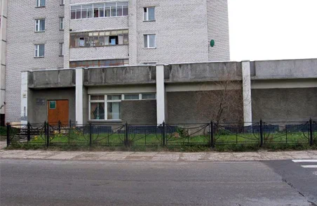
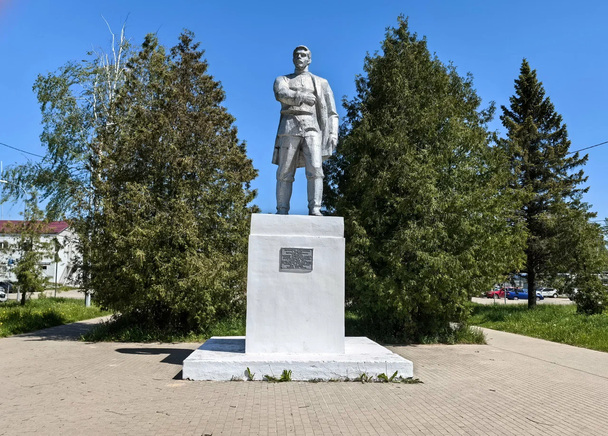
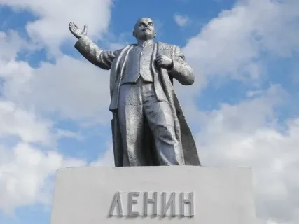
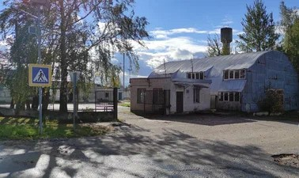
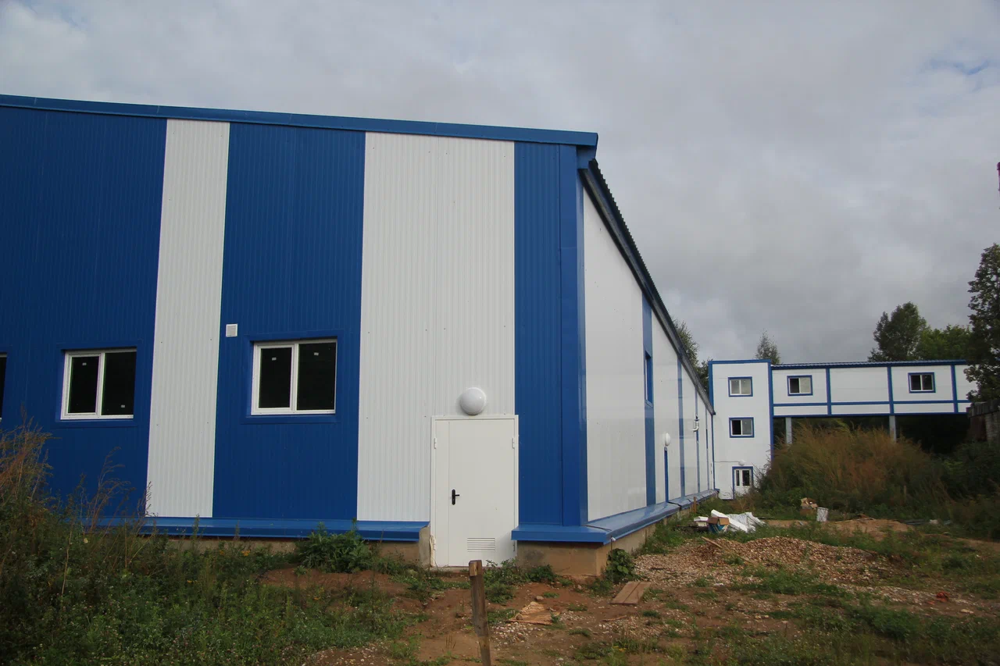

Заборье, Глинники и селищ характеризуют культуру населения края в древнерусское время. Орудия труда, бытовые вещи, украшения из железа, бронзы и стекла, кости позволяют не только рассказать о занятиях населения, реконструировать мужской и женский костюмы, но и частично восстановить элементы духовной жизни, прежде всего погребальный обряд.
8 сентября 1923 года заводу присваивается имя М. И. Калинина. Фабрика стала именоваться «Тверская фарфорофаянсовая фабрика имени М. И. Калинина в Кузнецове». В 1929 году село Кузнецово переименовывают в Конаково в честь Порфирия Петровича Конакова. После 1937 года фабрика называлась «Конаковский фаянсовый завод имени М. Калинина».


Один из главных храмов города стоит на берегу Волги. Вокруг – ухоженная территория и необычные декоративные фигурки-зайчики из зеленого материала, которые придают месту немного сказочности.
Так называют старинный сосновый бор в городе Конаково Тверской области. Это часть памятника природы регионального значения «Лесопарк Конаковский»


Памятник установлен в 1982 году в память о Порфирии Конакове — рабочем фаянсового завода, одном из руководителей Кронштадтского восстания в июле 1906 года. После подавления восстания по приговору военного суда Конаков был расстрелян.
9 мая 1985 года в парке у Конаковского фаянсового завода установили памятник заводчанам, погибшим на фронте Великой Отечественной войны.


Памятник Владимиру Ленину в Конаково установлен в 1967 году, к 50-летию Октябрьской революции.Уникальность памятника в том, что фигура вождя установлена на постаменте, который изначально предназначался для памятника Александру II
Название завода связано с именем Николая Васильевича Верещагина — старшего брата знаменитого живописца Василия Верещагина. Верещагин считается основателем российского сыроварения: в 1866 году он открыл в Тверской губернии первую сыродельную артель и школу сыроварения.


Конаковский завод стальных конструкций — предприятие в Конаково Тверской области, производитель металлоконструкций для энергетической отрасли.
Предприятие в Тверской области, филиал Всероссийского научно-исследовательского института пресноводного рыбного хозяйства (ВНИИПРХ)


Конаковская ГРЭС — одна из крупнейших электростанций Центральной части России, 8-я по мощности тепловая электростанция страны. Расположена на берегу Иваньковского водохранилища в городе Конаково Тверской области.